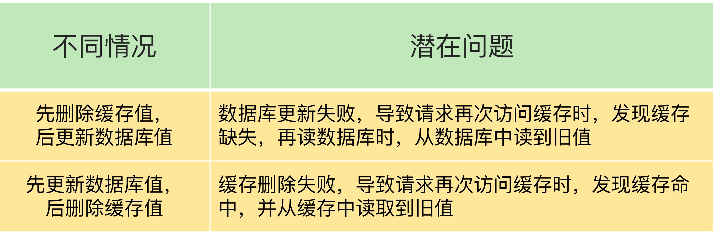
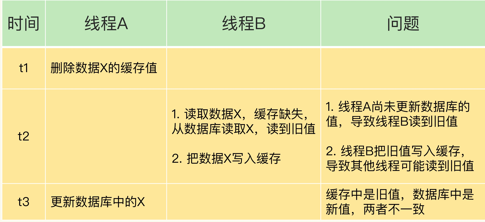
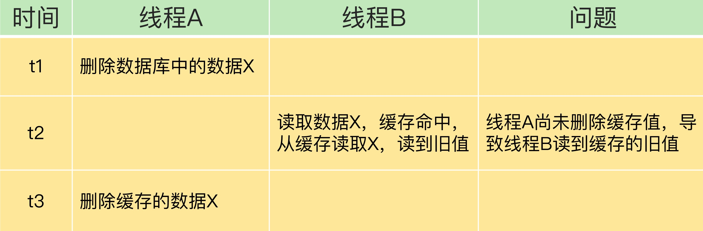
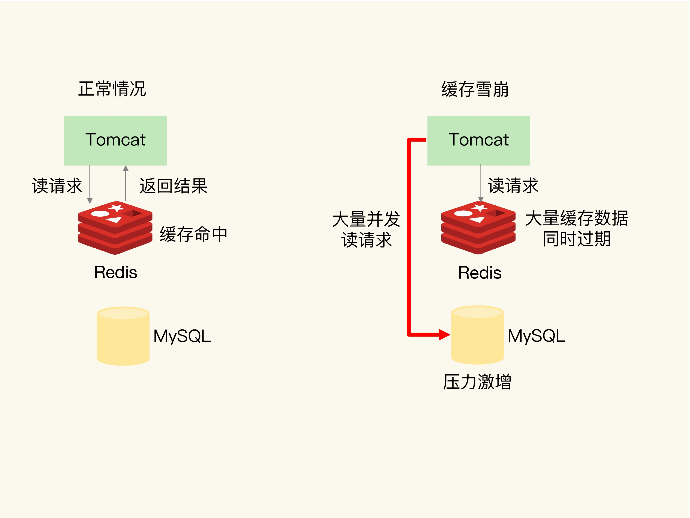
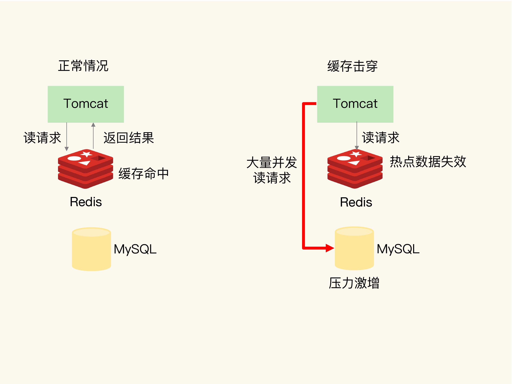
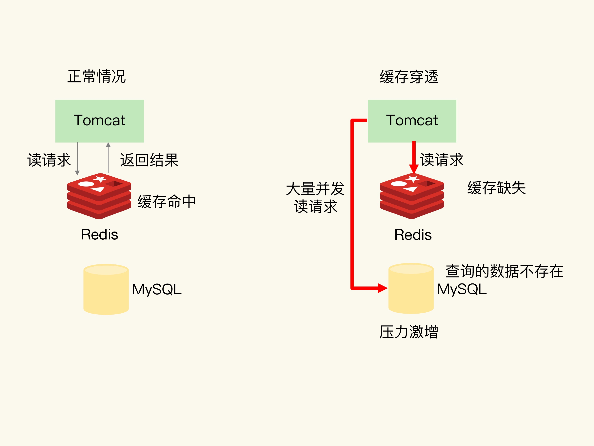

使用Redis为缓存是会存在一些异常问题，缓存中的数据和数据库不一致、缓存雪崩、缓存穿透、缓存击穿
缓存数据与数据库不一致
数据一致性
- 缓存中有数据，那么缓存的数据和数据库中的数据保持一致
- 缓存中没有数据，那么数据库中的数据必须是最新的
读写缓存和只读缓存
但是不同的写回策略，决定数据不一致的问题
读写缓存
- 同步直写策略：写缓存时，也不同步写数据库，二者数据一致
- 异步写会策略：写缓存时，不写回数据库，等到数据从缓存中淘汰时，再写回数据库，如果在写回数据库时出现异常，则不能保证数据一致 对于读写缓存保证数据一致，只能使用同步直写策略，同时保证事务的机制保证数据库和缓存数据的原子性
只读缓存
针对新增数据，直接写入数据库；如果是删改则标记缓存中的数据无效
- 新增数据：不对缓存做任何操作，而且数据库是最新的数据所以是一致
- 删改数据：应用需要更新数据库，并且删除缓存中的数据

解决数据不一致问题
重试机制
把要删除或者修改的数据放到消息队列中，当没有删除应用值或者是没有成功更新数据库时，可以从消息队列中重新读取数据，再次进行更新或者是删除；如果成功删除消息队列中的值，如果多次没有成功则向业务层发送信息
先删除缓存，再更新数据库

解决方法：在线程A更新完数据后吗，先让线程A Sleep 一小段时间，在进行一次缓存删除
先更新数据库，再删除缓存值

解决方法
- 删除缓存或者是更新数据库失败导致的不一致：使用重试或者是更新成功操作
- 在删除缓存值，更新数据库这两步操作中，其他线程的并发读操作，可以使用延迟双删
缓存雪崩
缓存雪崩 ： 大量的请求无法在Redis缓存中进行处理，紧接着大量的请求发送到数据库层，导致数据库增压力聚增
原因一 ： 缓存中的大量数据同时过期，导致缓存无法进行处理

解决办法
- 为数据设置不同的缓存过期时间
- 服务降级
- 非核心数据 ：暂停从缓存个中读取，放回预设值，空值，错误信心
- 核心数据 ：继续从缓存中获取，如果缺失从数据库中读取
原因二 ： Redis宕机导致雪崩
Redis 宕机，导致短时间内大量的请求积压到数据库层，发生雪崩
解决办法
- 在业务系统中实现服务熔断或者请求限流
- 通过主从节点搭建高可用Redis集群
## 缓存击穿
缓存击穿：针对某个访问非常频繁的热点数据的请求，无法在缓存中进行处理，之后大量的访问请求，发送到后端数据库中，导致数据库压力急增影响其他的数据库请求处理

解决办法
对于热点数据不设置过期时间
缓存穿透
缓存穿透：访问的数据既不在缓存中，也不在数据库中，导致访问缓存缺失，之后访问数据库数据也不存，这样缓存基本无用，如果持续大量的请求就会导致缓存和数据库服务压力大增

原因
- 业务层误操作：缓存中的数据和数据库中的数据被误删除
- 恶意攻击：故意访问数据库中不存在的数据
解决方法
- 缓存空值或者是缺省值
- 使用布隆过滤器快速判断数据是否存在
- 前端进行接口的恶意访问检测
总结